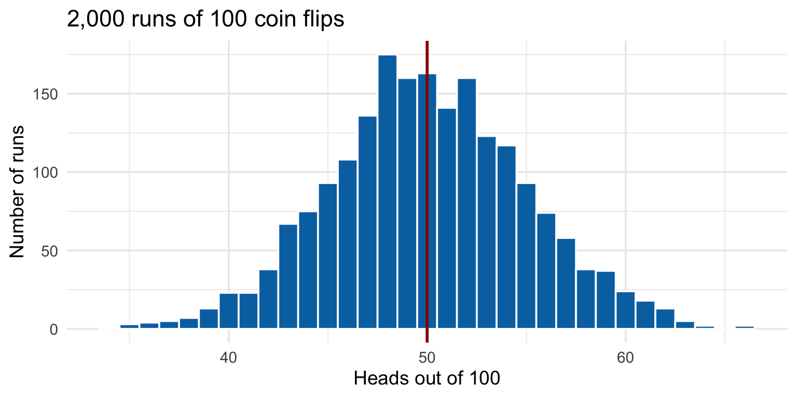
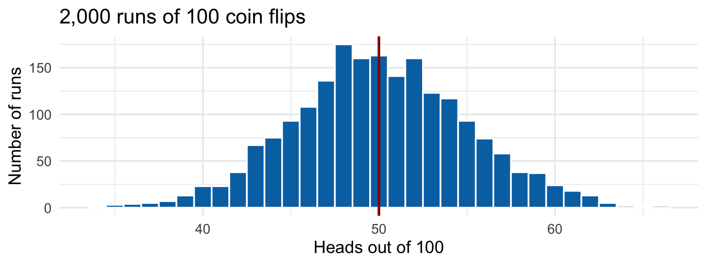
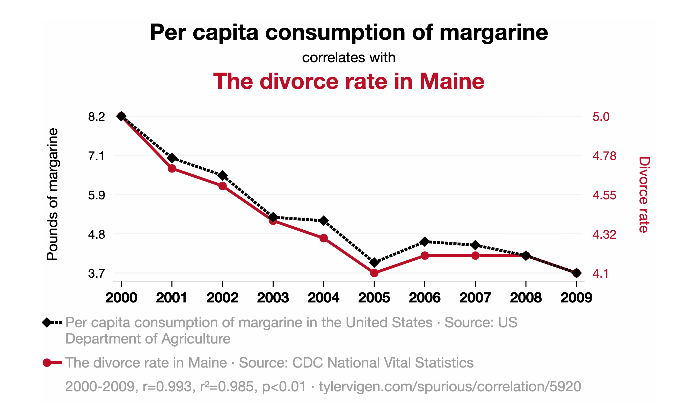
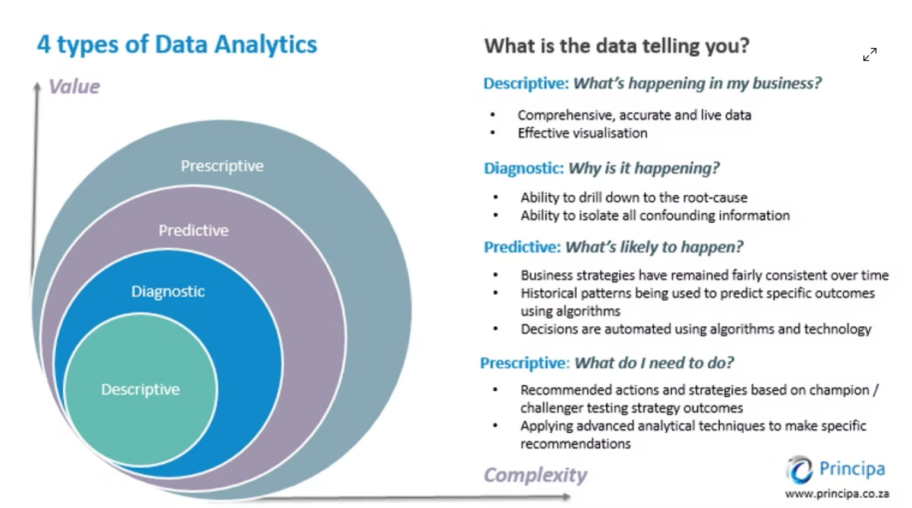
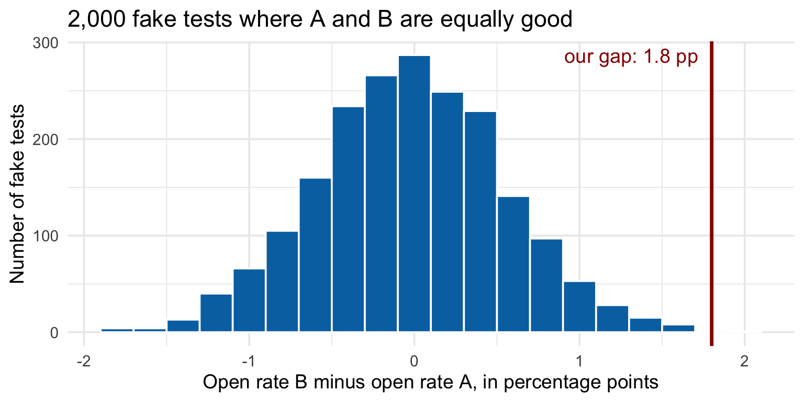
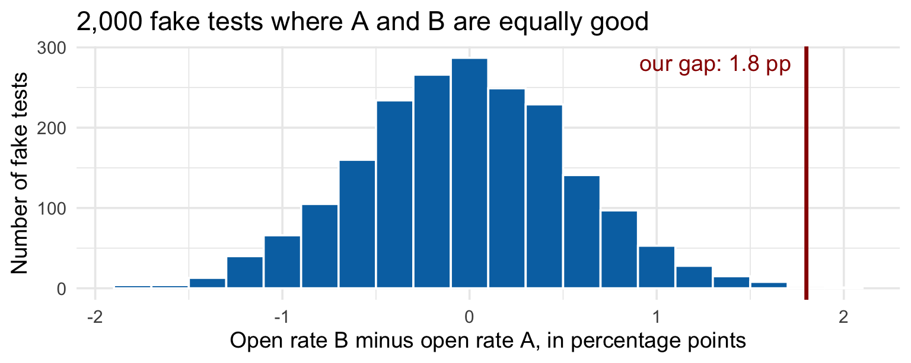
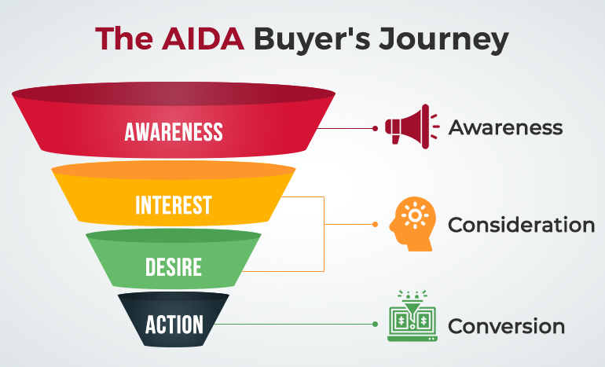
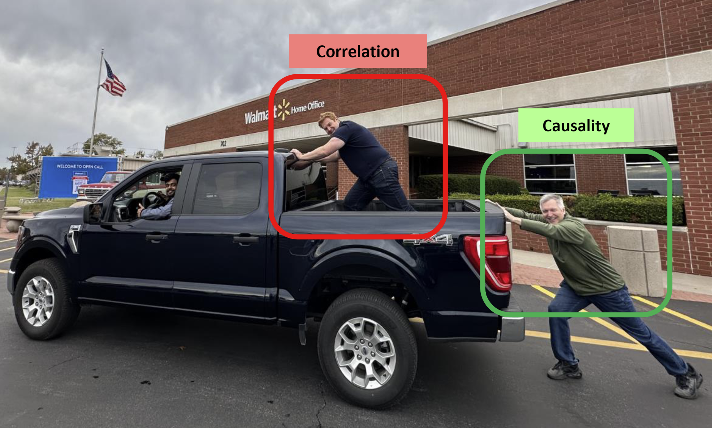

| Run | Heads out of 100 | Share of heads |
|---|---|---|
| 1 | 54 | 54% |
| 2 | 53 | 53% |
| 3 | 49 | 49% |
| 4 | 51 | 51% |
| 5 | 53 | 53% |
MKT 566 · Fall 2026
USC Marshall School of Business
Today we compare groups: coupon vs. no coupon, subject line A vs. B. Groups always differ a little, even when nothing is going on. Start with a coin.
Flip a fair coin 100 times. The truth is 50% heads. Five runs on the computer:
| Run | Heads out of 100 | Share of heads |
|---|---|---|
| 1 | 54 | 54% |
| 2 | 53 | 53% |
| 3 | 49 | 49% |
| 4 | 51 | 51% |
| 5 | 53 | 53% |

We repeated the 100 flips 2,000 times and counted heads each time. The red line is the truth, 50. What do you see?

*), 0.01 (**), 0.001 (***). Thursday’s tables use the same formatEverything that follows today is this logic applied to one comparison: treatment group vs. control group.
“We ran the campaign and sales went up. Did the campaign do it?”

What do you see? Does eating less margarine save marriages in Maine?
| What the data show | What is really going on |
|---|---|
| People carrying umbrellas on days it rains | Umbrellas do not cause rain. People check the forecast and act ahead of the rain: forward-looking behavior |
| Kids who get tutoring have lower grades | Tutoring does not lower grades. The kids who get tutoring are the ones who were already struggling: selection |
| Ice cream sales and drownings rise together | Neither causes the other. Summer drives both: a hidden third factor |
In every marketing version of these traps, the “treatment” (the ad, the coupon, the feature) was not handed out at random. Somebody chose who gets it, and that choice is correlated with the outcome.

Maria got the coupon and spent $60. Did the coupon work?
Causal inference is the art of filling in the missing world credibly.
| Customer | Got the coupon? | Spend with coupon | Spend without coupon | Effect |
|---|---|---|---|---|
| Maria | yes | $60 | ? | ? |
| James | yes | $45 | ? | ? |
| Priya | no | ? | $38 | ? |
| Tom | no | ? | $52 | ? |
2,000 customers (simulated). We assign the coupon two ways and compare the groups before the coupon does anything:
| How the coupon was assigned | Group | customers | avg. past spend | avg. age |
|---|---|---|---|---|
| Coin flip (random) | No coupon | 992 | $94 | 38.6 |
| Coin flip (random) | Coupon | 1008 | $96 | 37.9 |
| Targeted at big spenders | No coupon | 1367 | $75 | 38.1 |
| Targeted at big spenders | Coupon | 633 | $137 | 38.5 |
What do you see? In which case would “coupon group average minus no-coupon group average” be a fair measure of the coupon?
| How the coupon was assigned | Group | customers | avg. past spend | avg. age |
|---|---|---|---|---|
| Coin flip (random) | No coupon | 992 | $94 | 38.6 |
| Coin flip (random) | Coupon | 1008 | $96 | 37.9 |
| Targeted at big spenders | No coupon | 1367 | $75 | 38.1 |
| Targeted at big spenders | Coupon | 633 | $137 | 38.5 |
Randomization is what makes the no-coupon group a credible stand-in for the missing world.
This is the whole idea. Everything else today is about doing it well, and about what happens when firms skip it.
| Element | What it is | Running example |
|---|---|---|
| Population | the units you randomize | 20,000 email subscribers |
| Treatment | the one thing you change | a new subject line |
| Randomization | how units are assigned | 50/50 coin flip per subscriber |
| Outcome | what you measure | opened the email (yes/no) |
The next five slides are one A/B test, start to finish, with every number worked out.
Two subject lines. 10,000 subscribers get A, 10,000 get B.
| Subject line A | Subject line B | |
|---|---|---|
| Emails sent | 10,000 | 10,000 |
| Opened | 2,130 | 2,310 |
| Open rate | 21.3% | 23.1% |
One fake test:
We do this 2,000 times. The first three fake tests:
| Fake test | A opened | B opened | Gap, B minus A (pct. points) |
|---|---|---|---|
| 1 | 2,104 | 2,076 | -0.28 |
| 2 | 2,092 | 2,176 | +0.84 |
| 3 | 2,108 | 2,095 | -0.13 |
Next: how often does luck alone make a gap as big as our 1.8 percentage points (23.1% minus 21.3%)?

Each bar counts how many of the 2,000 fake tests produced that gap. The red line is the gap we actually observed. What do you see?

The simulation is what a hypothesis test does with a formula instead of 2,000 fake tests:
| Step | Question | Arithmetic | Result |
|---|---|---|---|
| 1. Null hypothesis | what if A and B are equally good? | gap = 0 | |
| 2. Difference | how big is the observed gap? | 23.1% − 21.3% | 1.8 pp |
| 3. Standard error | how much does chance move the gap? | √(pA(1 − pA) / nA + pB(1 − pB) / nB) | 0.59 pp |
| 4. z | how many standard errors is the gap? | 1.8 / 0.59 | 3.06 |
| 5. p-value | how often would chance produce this? | from z | 0.002 |
| 6. 95% confidence interval | which gaps are plausible? | 1.8 ± 1.96 × 0.59 | 0.6 to 3.0 pp |
A campaign spends $50,000. The platform’s dashboard attributes 1,800 conversions to it, each worth $100.
A return of 2.6 dollars per dollar. Great campaign?
The question the dashboard does not answer: how many of those 1,800 people would have bought anyway, with no ad? “Attributed” means the person saw or clicked the ad before buying. That is a correlation.
| Attribution | Incrementality | |
|---|---|---|
| The question | which ad or channel gets credit for a conversion? | how much of the behavior would not have happened without the ad? |
| The data | observational: click paths, impressions | experimental: holdout tests, ghost ads, geo tests |
| Typical output | “search 40%, display 30%, social 30%” | lift in %, incremental conversions, iROAS |
| Limitation | correlational: cannot tell whether the ad caused anything | needs randomization, which is harder to set up |
Same word, two meanings: ROAS uses attributed revenue; incremental ROAS (iROAS) uses only the revenue the ads caused. They can be very different numbers.
One customer sees a search ad on day 1, a social ad on day 3, gets an email on day 5, and buys for $100. Who gets the credit?
| Rule | Search ad (day 1) | Social ad (day 3) | Email (day 5) |
|---|---|---|---|
| Last-touch | $0 | $0 | $100 |
| First-touch | $100 | $0 | $0 |
| Linear | $33 | $33 | $33 |
| Time-decay | $20 | $30 | $50 |

Same campaign as the ROAS slide: $50,000 spent, 1,800 attributed conversions, $100 each. The audience is 100,000 people. This time we randomly withhold the ads from 10,000 of them. That slice is the control group.
| Treatment (ads turned on) | Holdout, the control group (ads turned off) | |
|---|---|---|
| Users | 90,000 | 10,000 |
| Conversion rate | 3.2% | 2.8% |
Same campaign. The dashboard said 2.6; the experiment says the campaign lost money. The 1,440 other buyers were going to buy anyway.
Same campaign as the holdout slide. “Ads turned on” does not mean “sees the ads”: most people in the treatment group never see an ad, because an ad only appears if the person visits a site where your bid wins the auction. Say that happens to 20% of them (18,000 of the 90,000), and they are not a random 20%: they are the heavy internet users.
| Kind of person | Share of the audience | Converts without ads | Converts if shown the ad |
|---|---|---|---|
| Heavy internet users (the ad reaches them) | 20% | 4.0% | 6.0% |
| Light users (the ad never reaches them) | 80% | 2.5% | 2.5% (never shown) |
What is the true causal effect of seeing the ad? Which two numbers in the table give it?
Same campaign as the holdout slide. “Ads turned on” does not mean “sees the ads”: most people in the treatment group never see an ad, because an ad only appears if the person visits a site where your bid wins the auction. Say that happens to 20% of them (18,000 of the 90,000), and they are not a random 20%: they are the heavy internet users.
| Kind of person | Share of the audience | Converts without ads | Converts if shown the ad |
|---|---|---|---|
| Heavy internet users (the ad reaches them) | 20% | 4.0% | 6.0% |
| Light users (the ad never reaches them) | 80% | 2.5% | 2.5% (never shown) |
The true effect of seeing the ad is 2.0 pp (6.0% − 4.0%): the same people, with and without the ad. We know it because we made up the numbers. Can we recover it from the data? Three attempts.
The obvious choice, and what we did on the holdout slide: compare everyone in the treatment group (ads turned on, whether they saw one or not) with everyone in the holdout (ads turned off). Same two kinds of people as before:
| Kind of person | Share of the audience | Converts without ads | Converts if shown the ad |
|---|---|---|---|
| Heavy internet users (the ad reaches them) | 20% | 4.0% | 6.0% |
| Light users (the ad never reaches them) | 80% | 2.5% | 2.5% (never shown) |
The tempting fix for the dilution: inside the treatment group (ads turned on), compare only the people who actually saw an ad with the people who never did:
| Kind of person | Share of the audience | Converts without ads | Converts if shown the ad |
|---|---|---|---|
| Heavy internet users (the ad reaches them) | 20% | 4.0% | 6.0% |
| Light users (the ad never reaches them) | 80% | 2.5% | 2.5% (never shown) |
The ad only reaches heavy users. So compare the same kind of people: heavy users in the treatment group, who saw the ad, with heavy users in the holdout, who would have seen it had ads been turned on for them.
| Kind of person | Share of the audience | Converts without ads | Converts if shown the ad |
|---|---|---|---|
| Heavy internet users (the ad reaches them) | 20% | 4.0% | 6.0% |
| Light users (the ad never reaches them) | 80% | 2.5% | 2.5% (never shown) |
| Attempt 1: everyone | Attempt 3: heavy users only | |
|---|---|---|
| People compared, treatment vs. holdout | 90,000 vs. 10,000 | 18,000 vs. 2,000 |
| Conversion rates | 3.2% vs. 2.8% | 6.0% vs. 4.0% |
| Gap | 0.4 pp | 2.0 pp |
| Incremental conversions | 0.4 pp × 90,000 = 360 | 2.0 pp × 18,000 = 360 |
| z (gap divided by its standard error) | 2.3 | 4.2 |
That question is what the “ghost ads” design answers.
The answer to “who would have been exposed”: run the auction for the control group too, just do not show the ad.
When you cannot randomize people (TV, radio, billboards, campaigns with no user-level tracking), randomize places:

Both men are moving forward with the truck. Which one is making it move?
Why correlational ad numbers survive, even at firms that know better:
Attribution is a system for maximizing the credit given to ads. Incrementality is a system for measuring what ads did. Know which one a number comes from.
A different, older approach: no experiment, no user-level data, just weekly totals and a regression.
\[\text{Sales}_t = \beta_0 + \beta_1 \text{TV}_t + \beta_2 \text{Search}_t + \beta_3 \text{Display}_t + \dots + \text{controls}_t + \varepsilon_t\]
| Week | Spend | Adstock (50% carries over) |
|---|---|---|
| 1 | $100 | 100 |
| 2 | $0 | 50 |
| 3 | $0 | 25 |
| 4 | $0 | 12.5 |
| 5 | $0 | 6.25 |
Used for
Limitations
Thursday: when you cannot randomize. Regression with controls, matching, and difference-in-differences, with a real Amazon case.
MKT 566 · Marketing Analytics